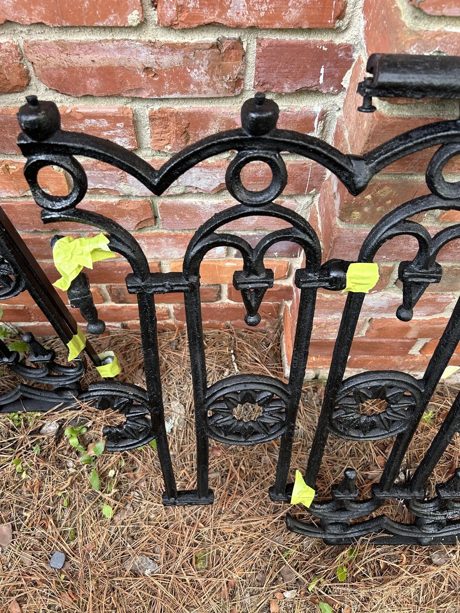
Our Work
Real jobs. Real welds.
Before-and-after repairs and finished builds, all from the shop’s own Google photos.
Before & after · drag the seam
Broke. Fixed.
Slide each glowing seam to compare. Other companies’ logos on customer trailers are blurred.


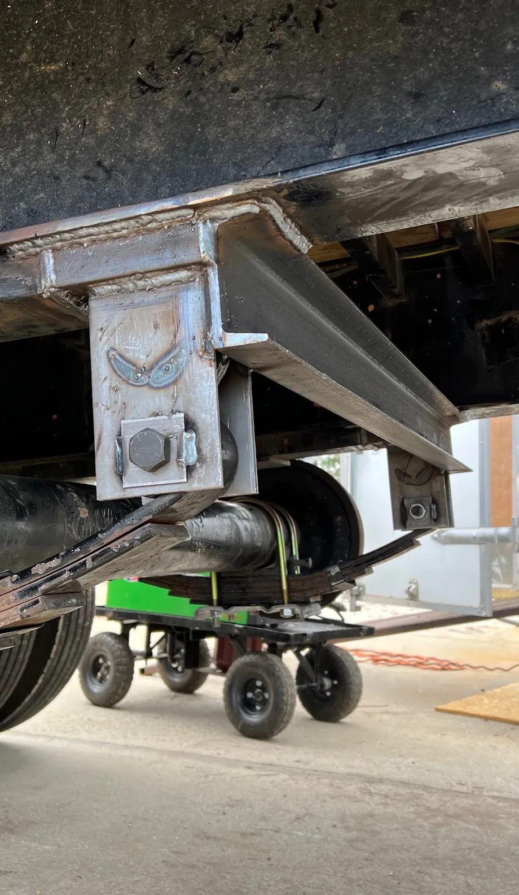
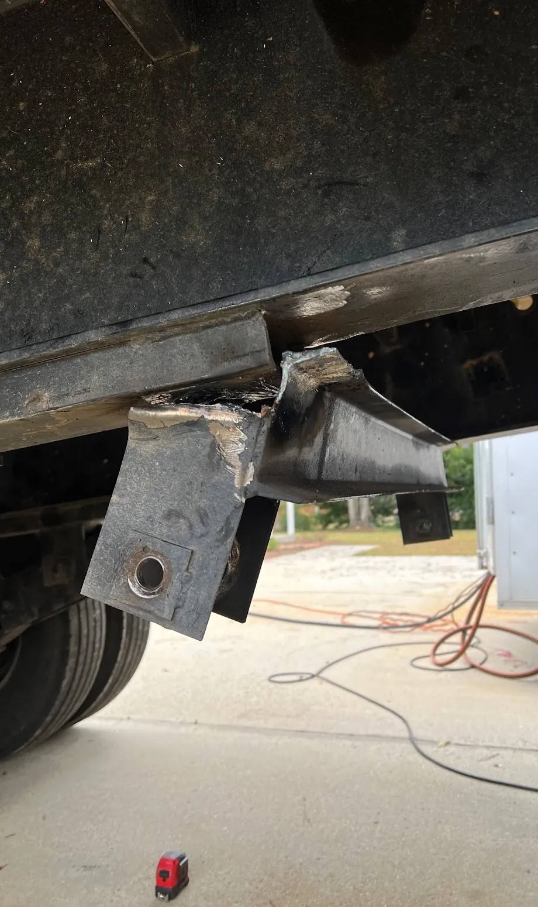
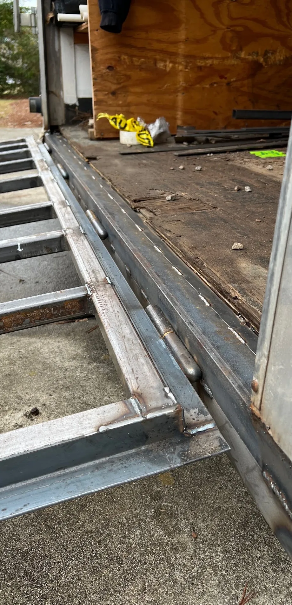
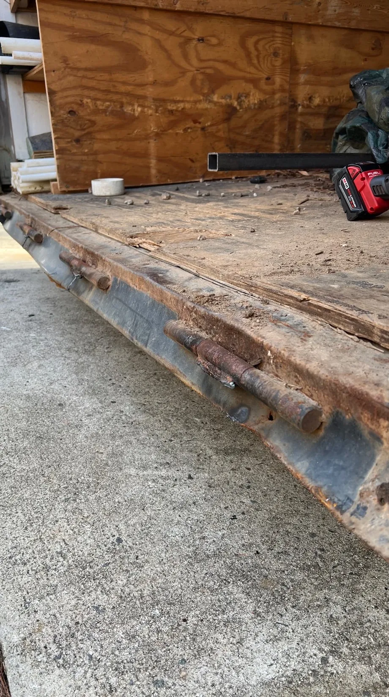
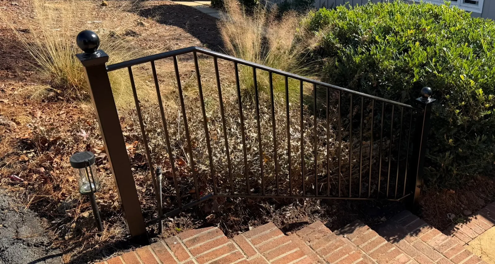
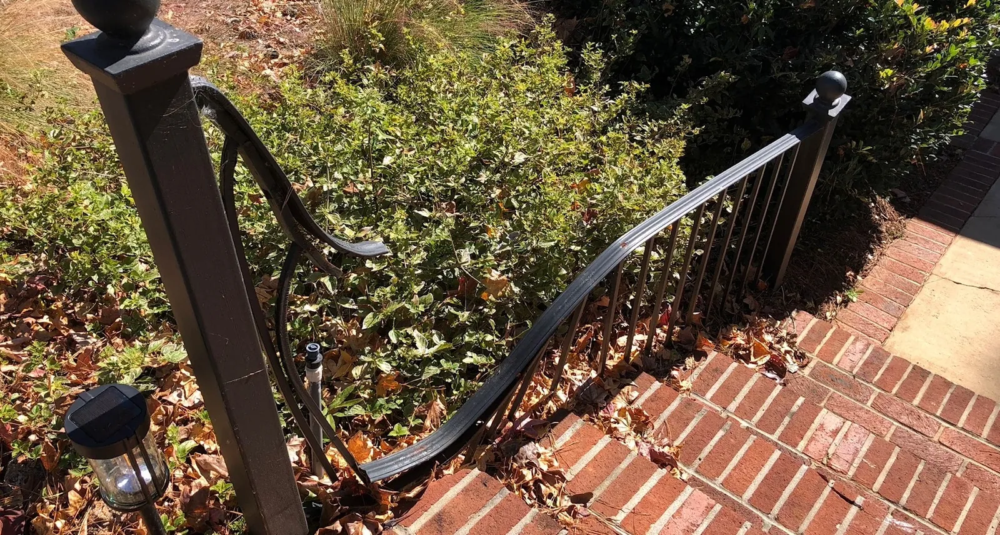
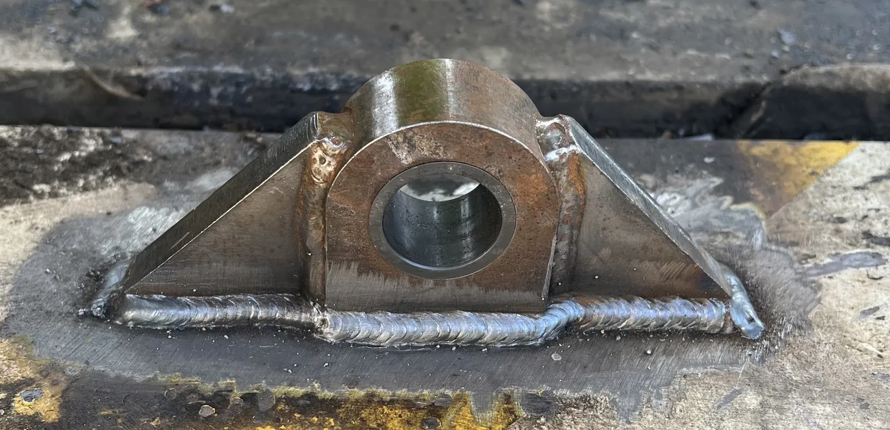
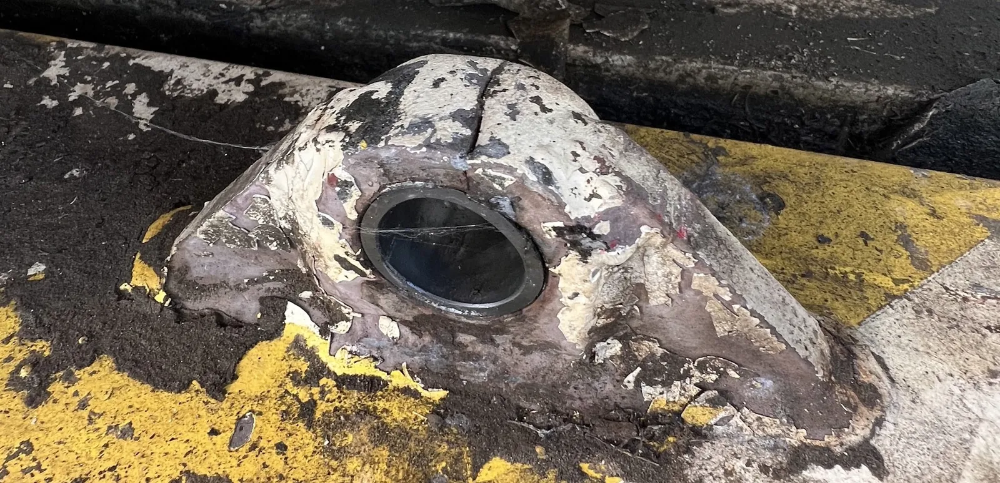
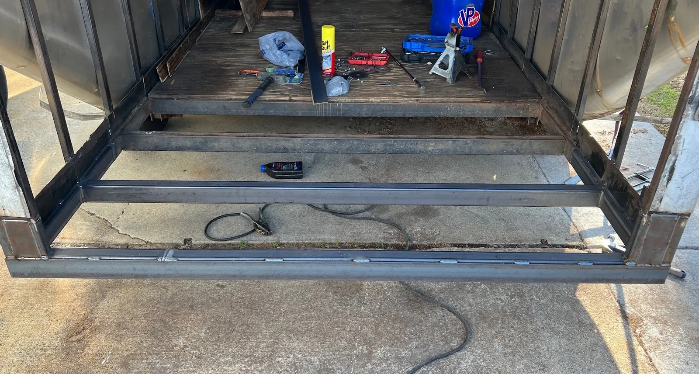
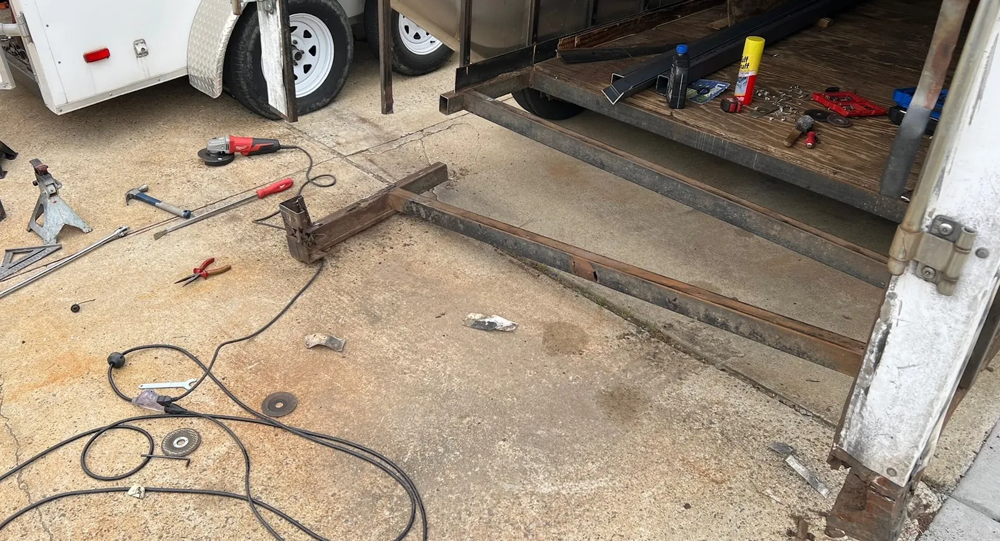
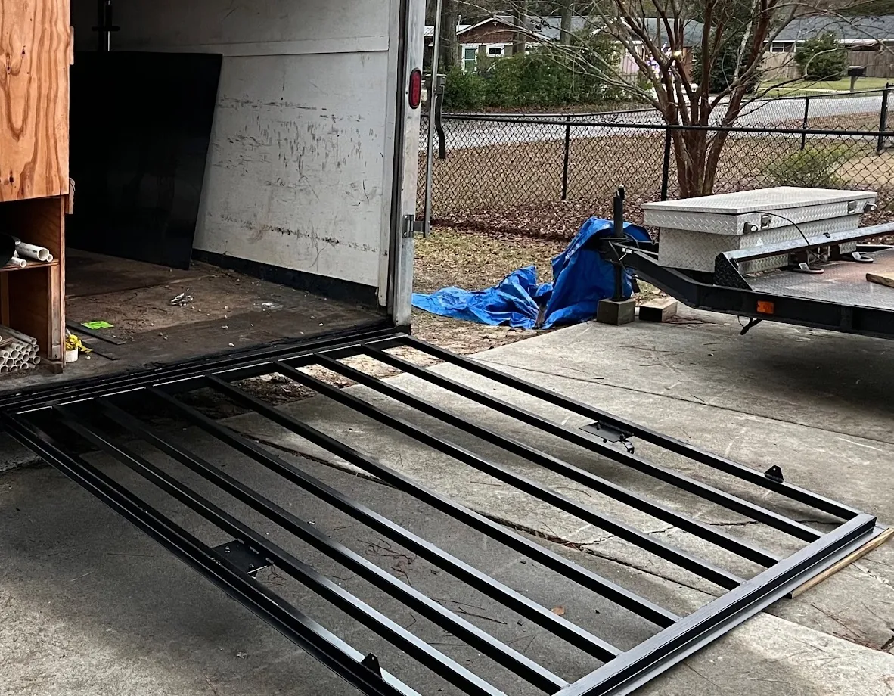
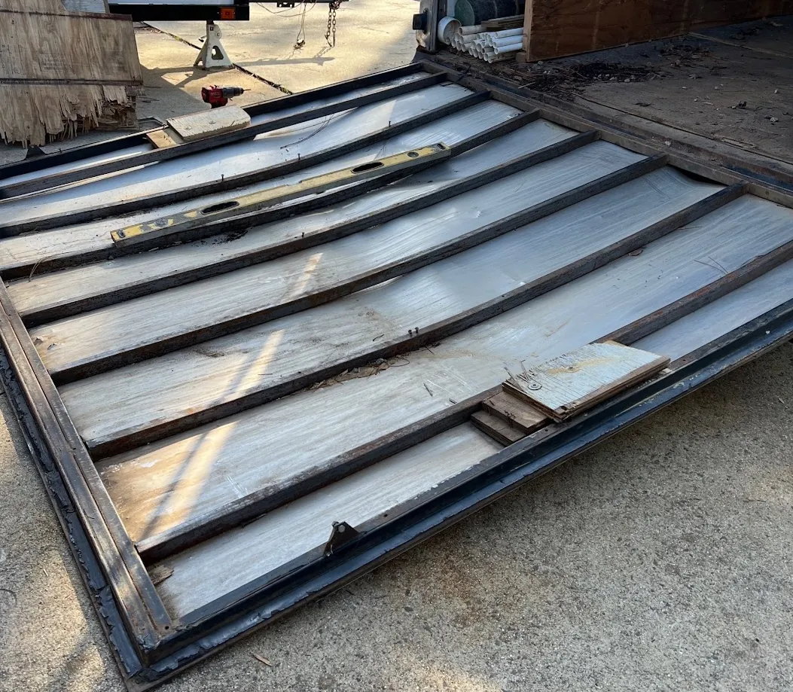
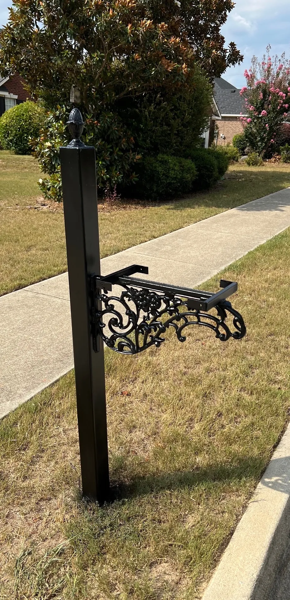
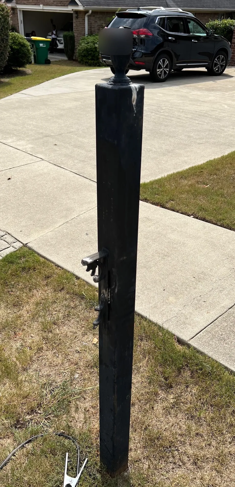
Gallery · drag or swipe
More from the shop.
Railings, gates, ramps, mailbox posts, trailers and frames. Tap any photo to open it.

Call or text the shop
Your job could be next.
Open every day, 6 AM to 6 PM. Onsite service or drop-off.
(706) 550-5298